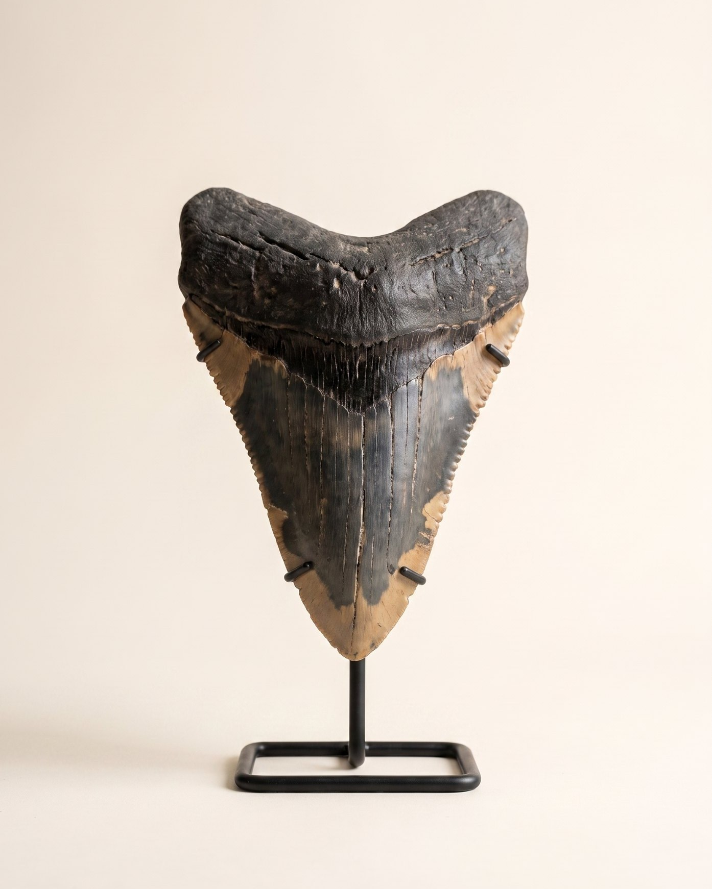

Наука как искусство: глубокое время, космос, экспертиза и коллекционирование. Мы пишем о том, что продаём, на уровне тех, кто это изучает.

Палласиты — граница ядра и мантии разрушенной протопланеты. Что именно мы держим в руках, когда держим метеорит Сеймчан.

Почему зуб в 16 сантиметров стоит в десятки раз дороже зуба в 7 — и как устроен рынок главного хищника океана.

Последняя великая экосистема суши: мамонты, носороги, пещерные медведи и саблезубы в одной прерии — и почему она исчезла.

Композиты, крашеная эмаль, «собранные» скелеты: на что смотрит лаборатория, прежде чем объект получает номер Relictum.

Пять признаков подлинности, которые проверяет лаборатория дома, прежде чем объект получает номер.

Трилобит до и после лаборатории: почему главная ценность образца создаётся не в раскопе, а под микроскопом.

Сеймчан, Сихотэ-Алинь, Дронино, Чинге и лунные: краткий справочник по камням, которые старше Земли.

Сто миллионов лет назад в марокканской Сахаре текла река, где охотился спинозавр. Дневник экспедиции в одну из самых опасных экосистем мелового периода.

От кунсткамер Медичи до приватных галерей: как устроена современная естественнонаучная коллекция и с чего её начать.
Раз в месяц: новые объекты до публикации, эссе журнала и приглашения в экспедиции.